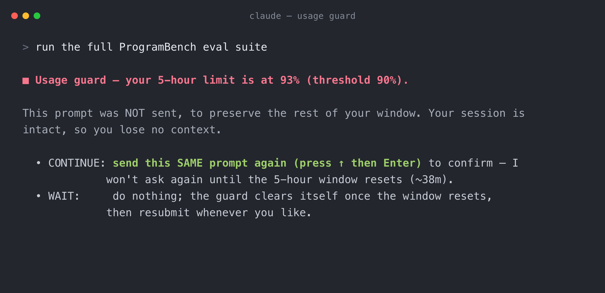
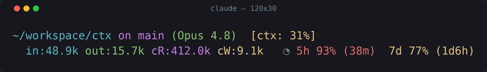

Rate Limit Monitor puts your Claude Code usage in the statusline and pauses token-heavy tasks as you approach your limit — so you don't burn the last of your window on one big run, and still have tokens for everyday work.
At or above your threshold, the guard holds the new prompt so a long run doesn't drain the rest of your window. Your context is untouched: approve to continue, or wait for the reset.

Approve by simply sending the same prompt again — no magic words in your message, and it only asks once per window.
Your 5-hour and 7-day windows, with a countdown to reset. Green → yellow → red as you approach the threshold.
Near the limit, the next prompt is held before it starts — so a token-heavy task can't eat your whole window.
Optional: pauses a long, multi-step model run mid-flight too, not just at submit — then hands control back to you.
Resubmit the same prompt to continue. No token in your message, and you won't be asked again until the window resets.
Uses the official rate_limits Claude Code reports — no transcript parsing, no token estimation.
No usage data yet, or an API-key user? It simply allows everything. It never blocks you by mistake.

The statusline segment, chaining neatly onto whatever you already run.
Claude Code hands the official rate-limit numbers only to the statusline — hooks never see them. So the statusline writes them to a small state file, and the guards read it.
┌────────────┐ official rate_limits ┌───────────────────────────┐
│ Claude Code│ ──────────────────────▶ │ statusline: render + write│
└────────────┘ └─────────────┬─────────────┘
│ state file
┌─────────────────────────────┼──────────────┐
▼ ▼ ▼
UserPromptSubmit guard PreToolUse loop guard (self-clears
(holds the next prompt) (pauses a running loop) after reset)
The statusline shows live usage and persists it every turn.
At/above the threshold, a new prompt (or a running loop) is paused.
Resubmit the same prompt to continue — remembered until the window resets.
Once the reset time passes, the guard steps aside automatically.
The installer backs up your settings.json and wires the
statusline + guards without clobbering anything you already have.
$ git clone https://github.com/meitalbensinai/rate-limit-monitor $ bash rate-limit-monitor/install.sh # then restart Claude Code
Undo any time with bash rate-limit-monitor/uninstall.sh. Requires jq, and a Pro / Max / Team / Enterprise plan (that's where Claude Code exposes usage data).
| Variable | Default | What it does |
|---|---|---|
RLM_THRESHOLD | 90 | Block prompts / deny loop tool calls at or above this percent. |
RLM_GUARD_LOOP | 1 | Also gate the model's agentic loop; set 0 to disable. |
RLM_OVERRIDE | !limit-ok | Legacy phrase that forces a prompt through and approves the window. |
RLM_WINDOWS | both | Which windows to guard: 5h, 7d, or both. |
RLM_INNER_STATUSLINE | — | An existing statusline command to render before this one. |